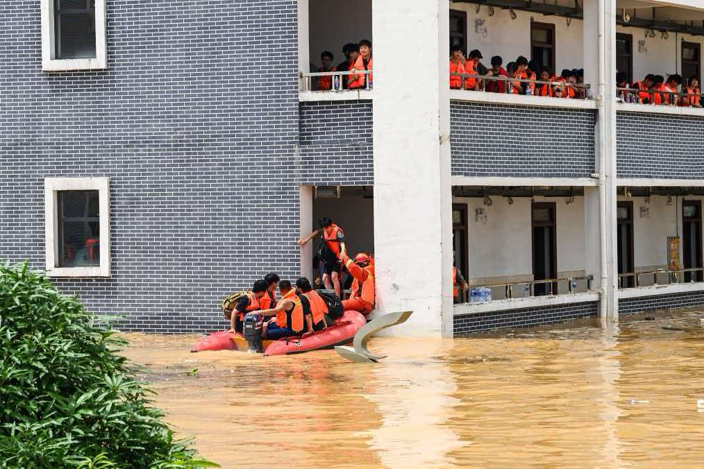
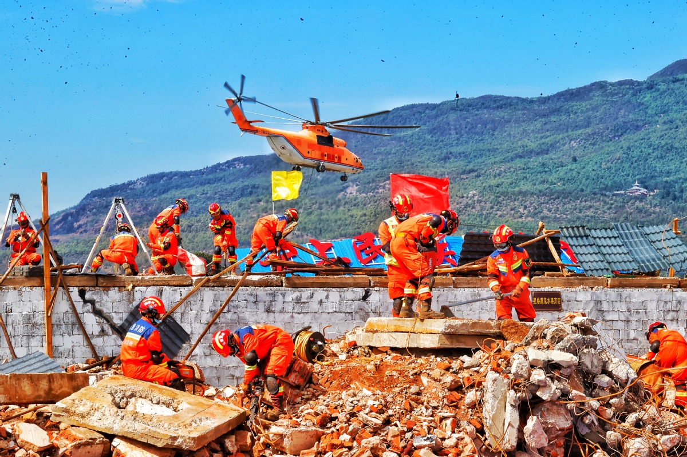
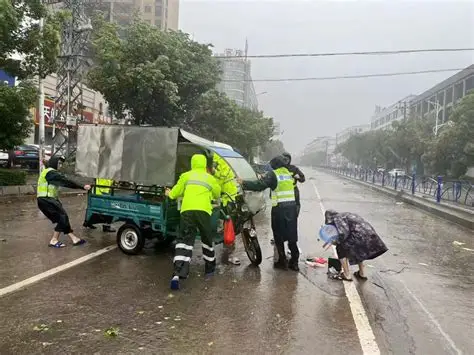
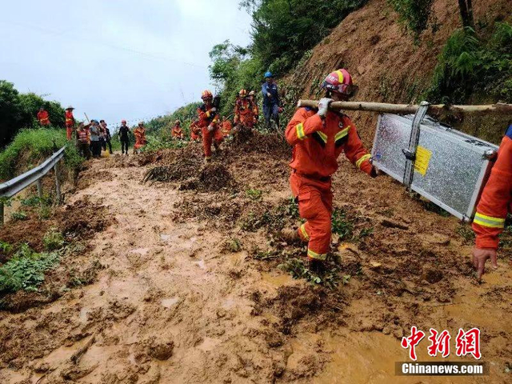

一、汛前早准备：
关注雨情水情预报，熟悉隐患点和转移路线；低洼家庭备好简易救生器材，保持通讯畅通；撤离时关掉煤气阀和电源总开关，听从指挥、团结互助，险情未解除不擅自返回。
二、洪来快登高：
就近向山坡、高地、楼房高层、屋顶、大树转移；不安全时用门板、桌椅、泡沫塑料扎筏逃生；被围困尽快联系防汛部门报方位。不游泳逃生、不爬电线杆铁塔、不爬泥坯房顶，远离断落电线防触电。
三、溺水巧自救：
不熟水性取仰卧位、头后仰露鼻呼吸，呼气浅吸气深，不慌张不乱扑；小腿抽筋保持镇静，仰泳位脚趾向背侧弯曲缓解后慢游上岸；救人从其后方出手，或投木板、救生圈、长杆、泡沫让其攀扶。灾后做好卫生防疫。
一、震时先躲，护头避险:
晃动时不要跑、不乘电梯、不跳楼。室内躲坚固桌下或承重墙内墙角，护住头颈，远离窗户和易坠物；户外远离建筑物、电线杆、广告牌，山区防落石，海边防海啸向高处转移；车内停在开阔地，留在车内。
二、震后快撤，防次生灾害:
待震动减弱或停止后再撤离，走楼梯、护头、不拥挤，前往空旷地带，警惕余震。确认安全后关闭电源燃气（闻到燃气味不要开关电器）；检查伤情，重伤者不随意搬动；用手机报平安，收听官方信息。
三、被困冷静，科学求救:
清理口鼻灰尘、捂住口鼻，节约体力和水源，敲击管道墙体发出求救信号，不要长时间大声呼喊；向有光、有风方向移动但避免盲目挖掘。互救时先近后远、先易后难，先让被困者头部暴露，避免尖锐工具和二次伤害，重伤员平卧搬运。
一、台风前早防备
关注台风走向，及时转移避险；加固空调外挂和高空设施，阳台花盆移入室内；门窗捆紧拴牢，必要时加钉木板；检查线路，备好手电、饮水和食物，停止露天集会与大型活动。
二、台风时莫外出
不在玻璃门窗、危棚简屋、广告牌下逗留，避免在河湖海堤和桥上行走；留守单位备好沙袋、手电、雨衣等物资，提前防淹防水，尽量待在安全处，发现险情及时关电源。
三、台风后防次生
不碰断落电线，远离断点并报修；清垃圾、消积水，做好环境消杀；不吃被水淹过或霉变食物，不喝生水；防蚊虫叮咬，外出穿长袖涂驱避剂；不急着回家，等安全后再返；不盲目开车进山，防滑坡泥石流。
一、认准预警早撤离
发现山沟轰鸣、河水暴涨变浑、漂来树枝石块，或山坡裂缝、树木倾斜、动物惊慌等征兆，立即撤离、不要犹豫；雨季避免进入沟谷、河道、陡坡，关注预报预警，熟悉逃生路线，备好应急包。
二、垂直方向跑高处
立即沿泥石流方向的垂直方向向两侧高处跑，越高越安全；绝不能顺山谷往下跑，不在沟口、河道、桥下、低洼处停留；来不及远离时找大岩石、背坡等坚固掩体，避开可能倒塌的建筑和电线杆；驾车遇险立即弃车逃生。
三、不贪财物防二次
不上树躲避（泥石流会连根卷走树木），不躲在陡坡厚土层低凹处或乱石堆后，不贪恋财物返回取物，不在沟口围观；灾后不立即返回现场，等官方确认安全，防二次泥石流和滑坡。